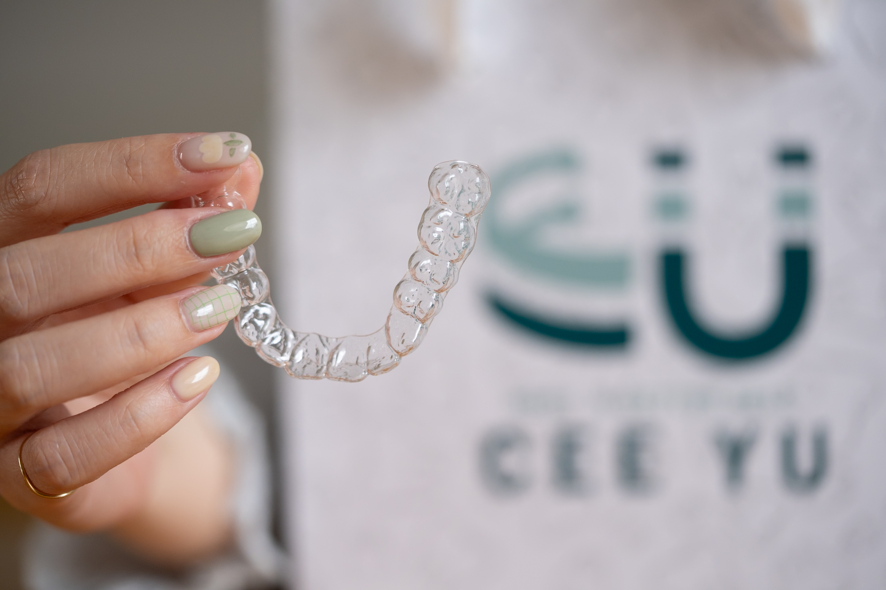
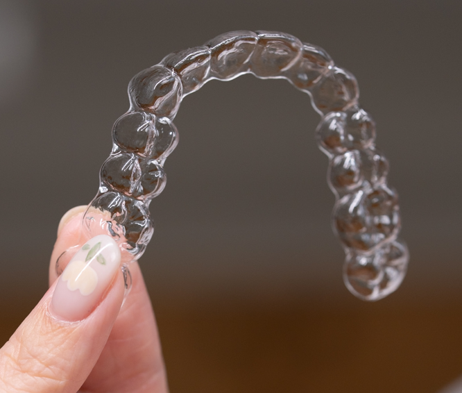
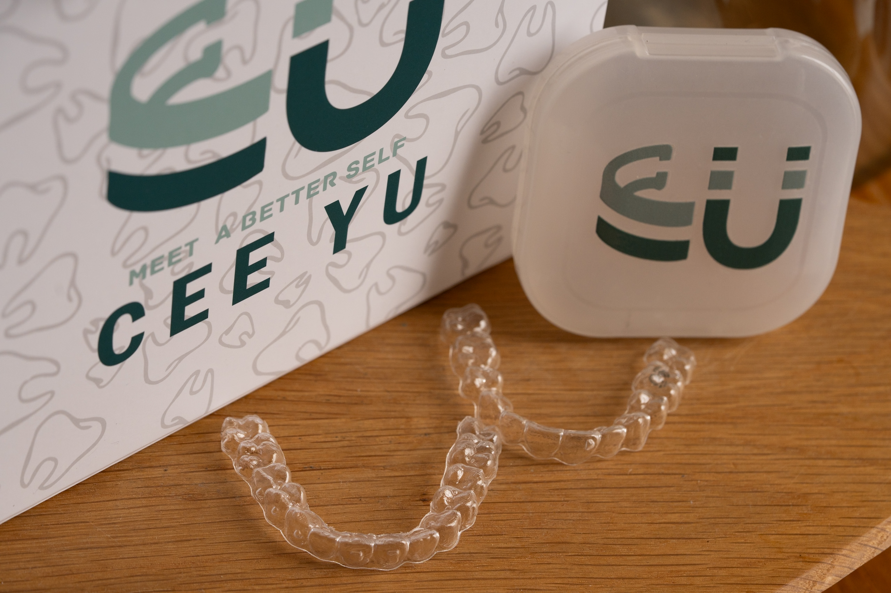
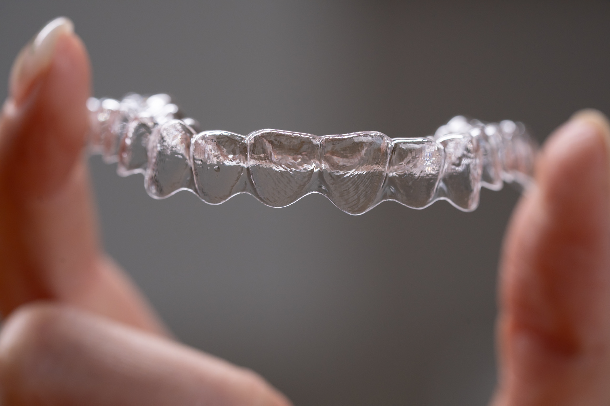
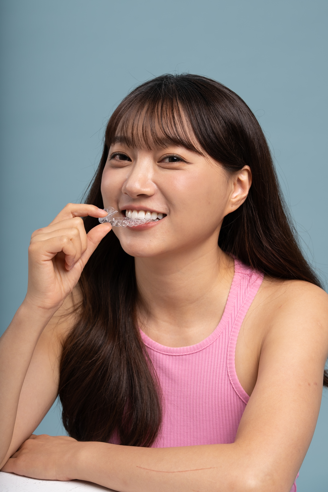
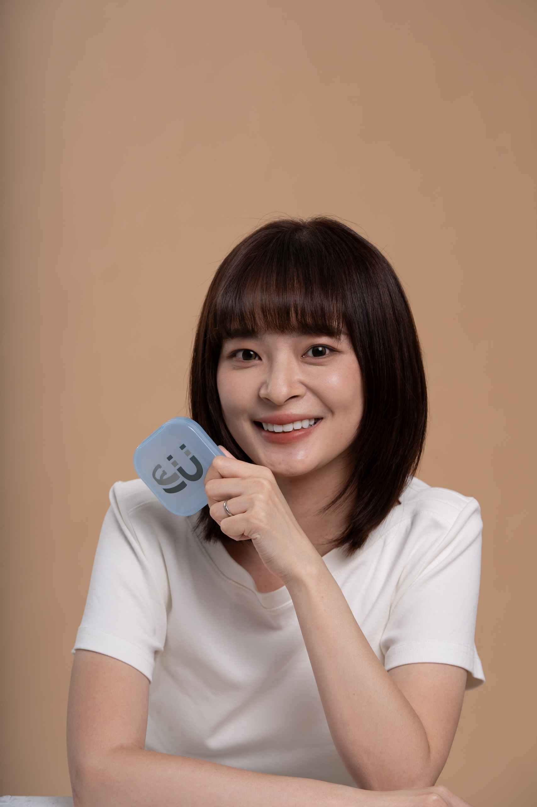

打造更自信的笑容
隱形矯正的新選擇
隱形舒適、專人監控、個性化療程。

自信微笑，輕鬆實現
1
線上預約
填寫基本資料，我們將主動聯繫您。
2
專業諮詢
醫師為您分析，規劃專屬療程。
3
訂製牙套
高科技設備製作，精準又舒適。
4
自信微笑
定期回診，隨時追蹤，輕鬆完成。
Cee Yu 材質優勢
自適應性高分子醫用材料

自動適應性
自動適應性
材質會根據口腔形狀微調，提供舒適而精準的貼合度。

穩定支撐
穩定支撐
高分子結構，耐拉扯、耐用不變形，安全感升級。

抗污抗染
抗污抗染
特殊材料不易染色，維持長時間透亮美觀。
真實見證．放心選擇

Sean
一直興起想整牙的念頭，但礙於工作需要大量報告，怕戴鋼牙吃東西不舒服、價格又比較貴，遲遲不敢起心動念，後來接觸到 Cee Yu，牙套是透明的完全符合我的需求。

芷妍
戴 Cee Yu 的隱形牙套到現在第二個月，完全沒有後悔。雖然每換一副新牙套時會有些微不舒服，也還在嘗試和疼軟感受共處中，但還是很期待接下來牙齒的變化！

柯胖
Cee Yu 一開始先線上評估，只要 5 分鐘就可以完成，在專業醫生評估適切性後約診，可以完全省去跑診所後發現不合適的時間成本。